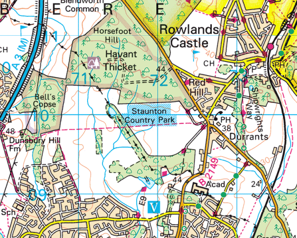

Hampshire Cross-Country League
Staunton Country Park, Havant

View Ordnance Survey map (using Streetmap)
Get directions (using Google Maps)
View Bird's Eye (using Bing Maps)
Parking
Please note there is no parking for cross-country competitors at the country park itself.
Arrangements have been made with Havant & Waterlooville Football Club to use their car park at Martin Road. This is a 10 to 15 minute walk to the start.
If you are desperate to slake your thirst after the race there are excellent facilities to do so at the football club.
There is a drop-off point for club tents at the monument by the Petersfield Road (see course map for location).
Course notes
For those of you who remember the old course, used for both county championship and national championships in the past, we have no access to the very wet, hilly fields of those days. All races are entirely on compacted gravel forest paths and roads, quite unsuitable for spiked shoes. The gravel in places is very coarse, even pebbly, not to mention the occasional brick. You have been warned! Those of you familiar with the parkrun, the course is very similar, apart from the senior men's race which takes in a circuit of Havant Thicket.
Refreshments on the day are provided by Staunton Country Park staff.
First Aid is provided by GB EMS.
The races will follow the standard timetable, preceded by Under 11 races at 11:30:
| 1130 | Under 11 Boys | 2.3km |
| 1145 | Under 11 Girls | 2.3km |
| 1200 | Under 13 Girls | 3.4km |
| 1215 | Under 13 Boys | 3.4km |
| 1230 | Under 15 Girls | 4.4km |
| 1250 | Under 15 Boys | 4.4km |
| 1305 | Under 17 Women | 4.4km |
| 1335 | Senior Women (including Veteran and Under 20 Women) | 6.5km |
| 1410 | Under 17 Men | 6.5km |
| 1430 | Senior Men (including Veteran and Under 20 Men) | 10.3km |
Directions
From A27
- Take the B2149/A3023 exit towards Havant/Hayling Island
- At the roundabout, take the exit onto Park Rd South/B2149 (first exit if travelling from West, third exit if travelling from East)
- Continue half mile to the next roundabout, take the 2nd exit onto Petersfield Road/B2149
- After 1 mile turn right at traffic lights onto Bartons Road
- After 0.2 mile turn right onto Martin Road
- Destination will be on the right Martin Road, Havant, PO9 5TH
- It is 0.6 mile walk to Staunton Country Park from here
If travelling from North on A3(M)
- At junction 2, take the B2149 exit signposted Emsworth
- After 0.2 mile at the roundabout, take the 1st exit onto Dell Piece East/B2149
- After a further 0.2 miles at the roundabout, take the 3rd exit onto B2149
- After 2.0 miles at the roundabout, take the 2nd exit onto Durrants Road/B2149
- Durrants Road/B2149 turns slightly left and becomes Petersfield Road/B2149
- After 1.4 miles turn left at traffic lights on to Bartons Road
- After 0.2 mile turn right onto Martin Road
- Destination will be on the right Martin Road, Havant, PO9 5TH
- It is 0.6 mile walk to Staunton Country Park from here.
Sat Nav destination
Postcode: Havant & Waterlooville FC PO9 5TH
Further information
Staunton Country Park (external link)